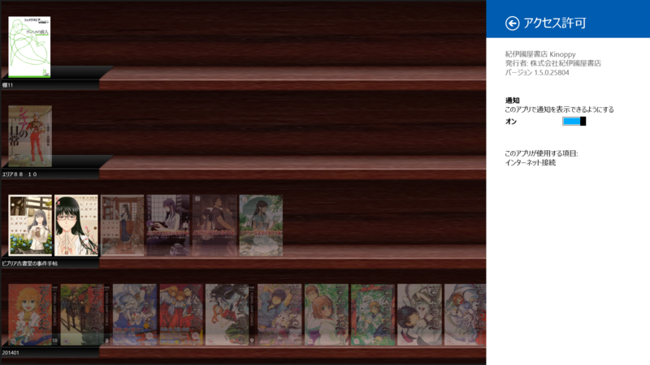
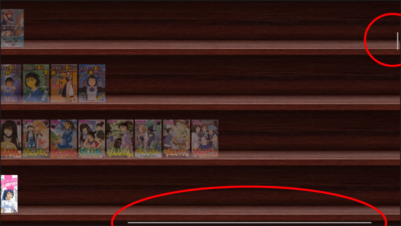
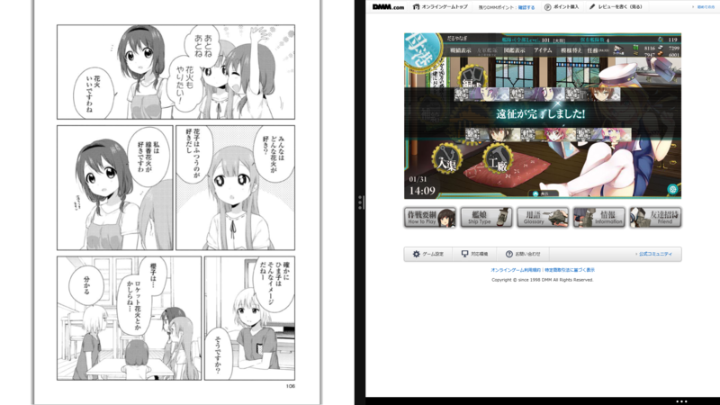

紀伊國屋書店 Kinoppy 1.5.0.25804
執筆日時：

説明
Kinoppyは紀伊國屋書店の電子書籍サービス「Kinoppy」で販売・配信する電子書籍をダウンロード・閲覧するためのアプリです。
機能
•【ビューア】：購入した電子書籍を読む。（文字サイズを変更する、本の特定箇所をマークしコメントを付けたりする、本文全体を検索する、などの機能があります。）
•【本棚】：購入した書籍を管理する。(本や棚の並び順を変える、棚の名前を付ける、などの機能があります。)
満を持しての登場ですね！ 心待ちにしていた人も多かったと思います。
だるやなぎさんの期待に応える日が来たか・・・
2014-01-30 12:44:33 via web
急かしてほんともうしわけない。
さっそく少し利用してみたのだけど――手元にある iPad 版と比べるとちょっと動作にもたつきを感じた。とくに画面の回転やトレースズームの ON/OFF でビューの再生成とスクロールをしている（？）のが見えるあたりがちょっと（Surface 2の場合）。けれど、本をめくるなどの通常の利用ではとくに不満は感じなかった。

あと、水平スクロールが棚単位ではなく、本棚全体につくのがあまりイケてないと感じた（iPad 版は棚ごとに水平スクロールする）。
でも、全体的にはなかなかよいデキといっていいと思う。複数書籍の選択対応＆セマンティックズームを使った棚の整理なんかは、iPad 版よりも使いやすいと感じる。ストアが内蔵されていないのは……まぁ、ウェブストアじゃないと買えない書籍もあるし、そこはあまり気にならないかな。できれば、間違って紙の本を買わないように、もうちょっとわかりやすいサイトになってくれたらうれしい。
それにしてもトレースズームまで対応してくれたのか……目玉機能だしね。個人的にはそこを省いてもいいからもっと早期のリリースを望んでいたのだけど、それももういいや。ただただ、ありがたい。

だって、これで艦これしながらマンガ読める！！